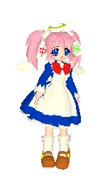
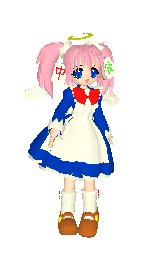

About the webmeowstress
I'm Kissamaagi, a multimedia artist and a CS student from Finland. I have a lot of hobbies, but mostly I just like cute things and weird old things. I think the section about my dolls tells a lot more.
I'm Kissamaagi, a multimedia artist and a CS student from Finland. I have a lot of hobbies, but mostly I just like cute things and weird old things. I think the section about my dolls tells a lot more.
Links
My collection of joke sites (finnish)
Sources from a yuri related program I did with a friend at Desucon Frostbite (finnish)